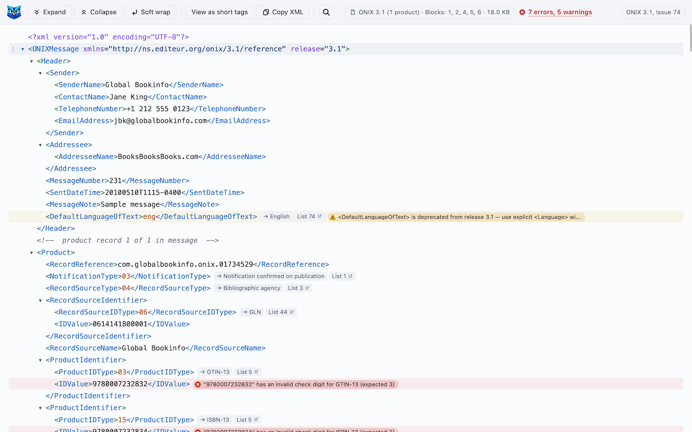
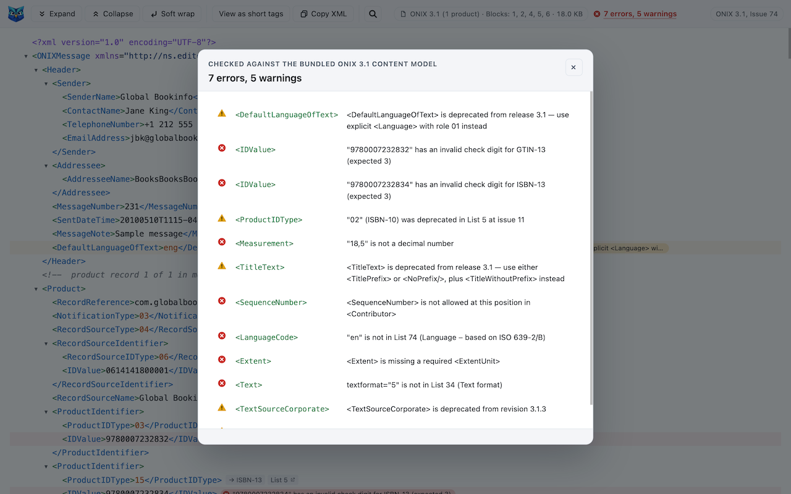
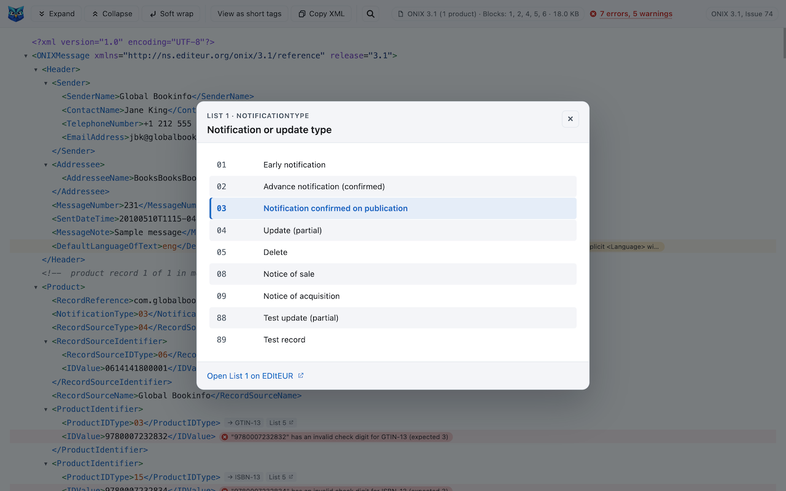

ONIX Viewer
Readable ONIX XML in Chrome: a collapsible tree, product summaries, EDItEUR code-list labels inline, and automatic validation.
Install from the Chrome Web Store Manual installation Source on GitHub

What it does
Open any ONIX file in Chrome, from a URL or from disk, and instead of a wall of tags you get a syntax-highlighted tree you can fold, search and copy from. The extension only activates on documents that are actually ONIX. Other XML is left to the browser.
- Code-list labels. Every value from the bundled EDItEUR lists gets its label beside it, and a click opens the whole list with a link to EDItEUR's definition page. All 165 lists are bundled, so it works offline.
- Product summaries. A folded
<Product>reads ISBN · form · title, so a feed with thousands of products stays scannable. - Validation. Every file is checked against the ONIX 3.0 or 3.1 content model as it loads: missing, misplaced or unknown elements, codes outside their list, deprecated codes and elements with EDItEUR's advised replacement, datatype violations, uniqueness rules and ISBN and GTIN check digits. Each finding is pinned to its row, and the toolbar count opens a list you can jump from.
- Both dialects. View a short-tag file under reference names or the reverse with one switch. Copying follows what you see.
- Supports ONIX 2.1, 3.0 and 3.1, reference and short tags, and the ONIX Acknowledgement message.


Installation
ONIX Viewer needs Chrome 119 or later. There are two ways to install it.
From the Chrome Web Store
The preferred way. Open ONIX Viewer in the Chrome Web Store and click Add to Chrome. Chrome keeps it up to date from then on.
Manually
If you would rather not use the store, or want a specific version:
- Download
onix-viewer-<version>.zipfrom the releases page on GitHub. - Unzip it somewhere permanent. Chrome loads the extension from that folder, so do not delete or move it afterwards.
- Open
chrome://extensionsand turn on Developer mode in the top right. - Click Load unpacked and pick the unzipped folder.
Chrome shows a developer-mode notice on restart for extensions loaded this way, and updates are manual: replace the folder's contents with the new release and press the reload arrow on the extension's card.
Local files
Either way, to open .xml files from disk, enable Allow access to file URLs under the extension's Details in chrome://extensions.
Keyboard shortcuts
- / search, Enter and Shift+Enter step through matches, Esc closes
- e expand one level, c collapse one level
- t switch between reference names and short tags
- v open the findings list
- w toggle soft wrap
Privacy
ONIX Viewer collects no data. It declares no permissions and no host permissions, has no background process, and makes exactly one network request: a same-origin re-fetch of the page you are already viewing, to read its XML source. Nothing is stored, sent anywhere, or shared with anyone. The full threat model and how to verify it are in SECURITY.md.